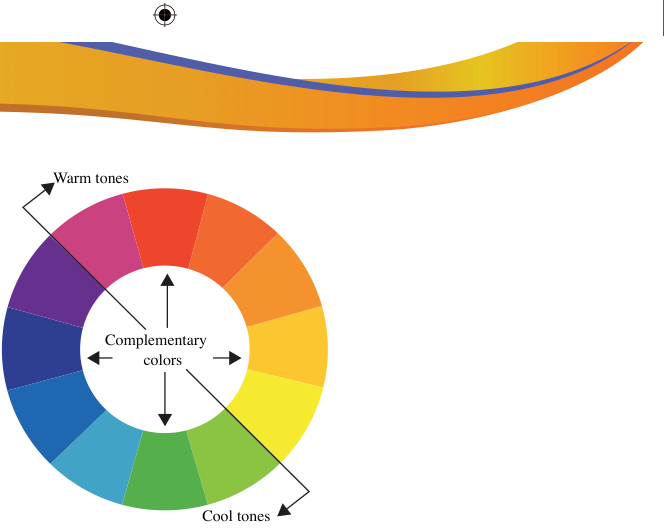
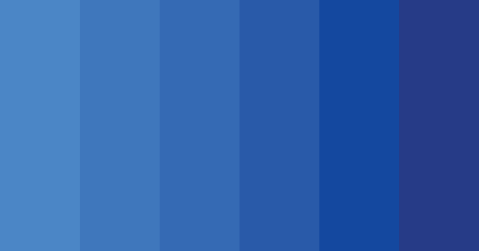

Figure 3.9: Complementary colours
Monochromatic colours: These are all colours of the same hue but different values after tinting or shading. For example, blue, dark blue, medium blue and light blue are a good set of monochromatic blue schemes. The term monochrome originates from Greek. Mono means ‘one’ and chrome means ‘colour’. Monochrome means varieties of a single colour or hue. Figure 3.10 also shows the monochromatic value of the blue colour.

Figure 3.10: Monochromatic value of blue colour

Activity 3.2
(a) Use your pallet to make colour preparation and do the following;
i. Draw different colour wheels showing primary colours, secondary colours, Tertiary or intermediate colours, and twelve colours.
ii. Draw a colour wheel showing warm and cool colours.
iii. Make a simple decorative painting that shows the application of hues, value and intensity.
(b) On white manila paper, create a series of monochromatic value of the three primary colours.